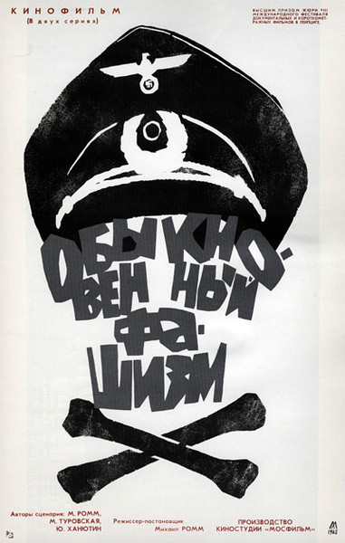

《普通法西斯》(Ordinary Fascism)
剧情简介：
- 米哈依尔·罗姆通过16章节的纪录片《普通的法西斯》，探讨了深刻的主题：“我们该如何揭示历史的秘密？德国法西斯主义如何渗透到千百万德国人心中，腐蚀其灵魂、疯狂其理智的？”另一位导演康拉德·沃尔夫对此片赞赏不已。影片各个章节的副标题也都意味深长，例如“我的奋斗”、“被宰杀的羔羊”、“残忍的梦想与行动”、“元首指挥我们前进”和“纳粹的艺术”等等。为了说明每个标题的含义，影片运用了大量史料镜头，是苏联红军从帝国电影资料库中缴获的资料或是从德军战犯手中没收的个人收藏。通过运用蒙太奇的剪切组合，罗姆将历史场景和现代画面巧妙结合起来，并加入儿童的元素，使得影片非常引人入胜。人们今天观赏这部影片的感觉与它1965年首映时别无二致。
短评：
- 1.本片最卓越之处，不在于镜头选择的犀利，也不在于对纳粹的批判和嘲讽，也不在那些巧妙的历史与现实的剪接。而是罕见的跳出了意识形态范畴，抨击了人类社会的形形色色的丑恶。当然在那个年代的苏联，这种去意识形态化是很有限的。但这不能抹杀本片的优秀，特别是从社会学和人类学的角度来看。
- 2.电影中的蒙太奇和解说充满了戏谑，不愧是电影蒙太奇中心俄罗斯的纪录片。剪辑很厉害，逻辑也尚可，从开头结尾的儿童明确地指出了法西斯的源头，而没有片面地进行谴责。还有对于西方资本主义的享乐主义和现代主义进行批判，这一点现在已经很少了。让我好奇的里面的对于集体主义的批判是怎么不联系苏联的。